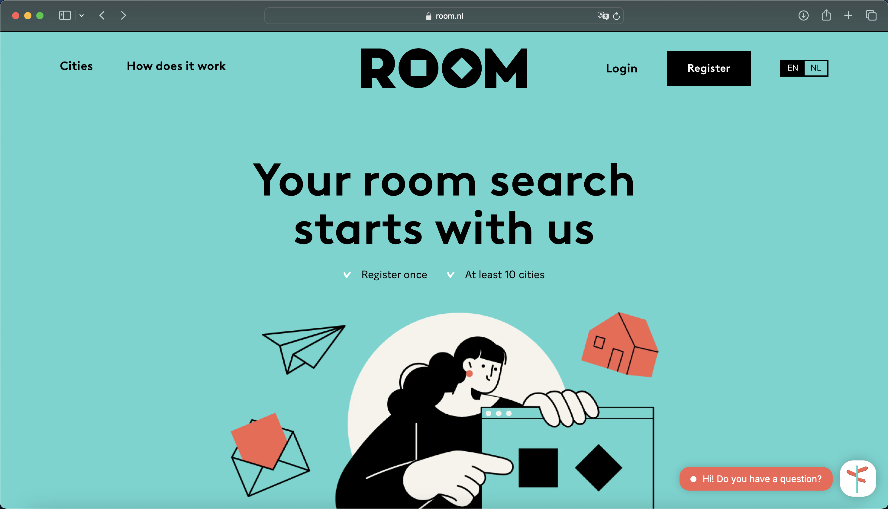

Housing
Gemeente Step
In the Netherlands, especially in Haarlem, finding a place to live can be very difficult. It might be challenging to secure a home or room due to the competitive rental market, high demand, and limited supply. Long wait times and escalating costs are common issues for prospective tenants. To improve the likelihood of finding suitable housing, it is advisable to start your search as early as possible and to use a variety of resources, including local rental agencies, online services, and university housing support. First of all, you need to register yourself at the Gemeente (municipality) of Haarlem, which is located in the city center of Haarlem.

University Rooms
Inholland University works with DUWO, a well-known provider of dorm accommodations, to provide specific housing choices for its students. The rooms at DUO are exclusively designated for students from Inholland, offering a practical and encouraging living space near the university. Usually well-furnished with shared utilities, internet connection, and pleasant living areas, these rooms provide all the necessities for a productive and enjoyable stay for students. First-year students typically have the most availability, so it's important to apply as soon as possible to guarantee housing. Pupils may be assigned to separate rooms with common cooking facilities or shared rooms with other students. Students should apply via the DUO website or the university's housing office for comprehensive details on room availability, application processes, and rental terms.

Room.nl
Room.nl is a rental platform for properties across the Netherlands, including Haarlem, offering a variety of listings such as single apartments, shared rooms, and entire houses to meet different needs and budgets. Creating an account requires a one-time fee of €0.30, and the longer you're registered, the better your chances of securing a rental, as this boosts your visibility to landlords or potential roommates. While useful for Haarlem, Room.nl also lists properties in other Dutch cities, making it a helpful resource for those moving within the country. To ensure safety and legitimacy, it's recommended to verify listings and meet landlords in person before committing. For the most current information, visiting the website or contacting support is advised.
